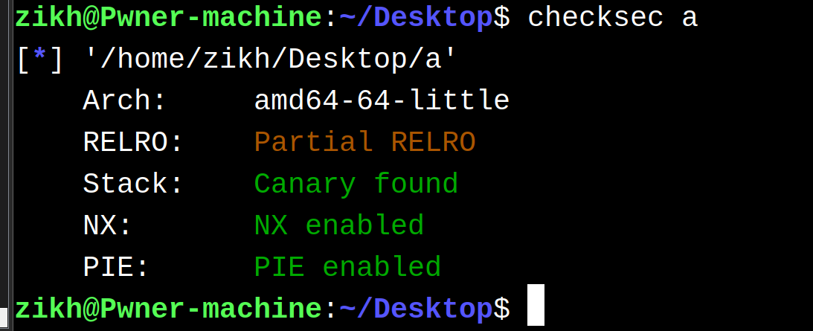
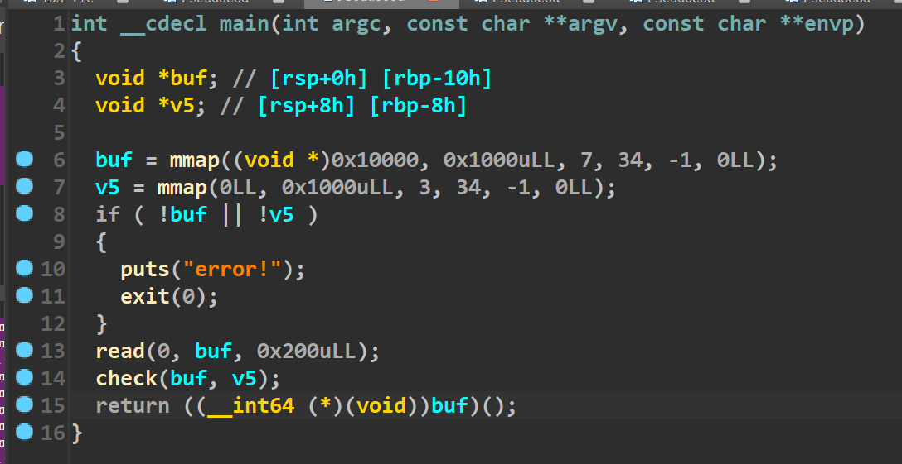
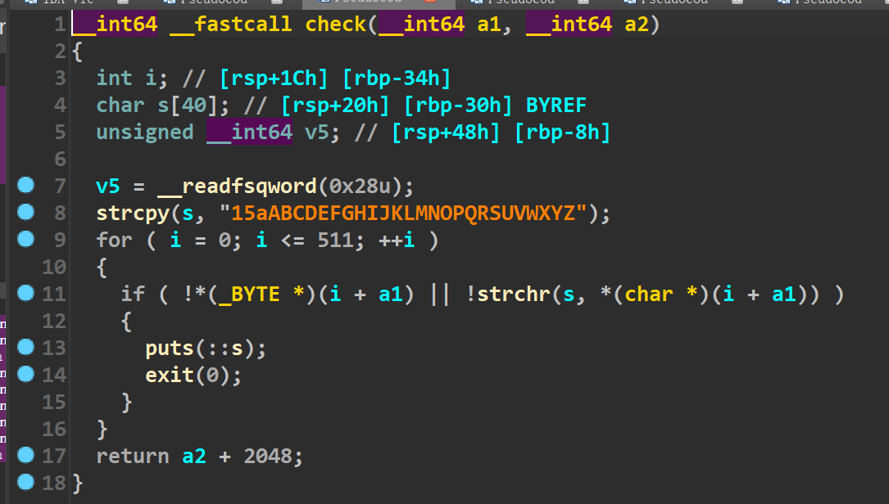
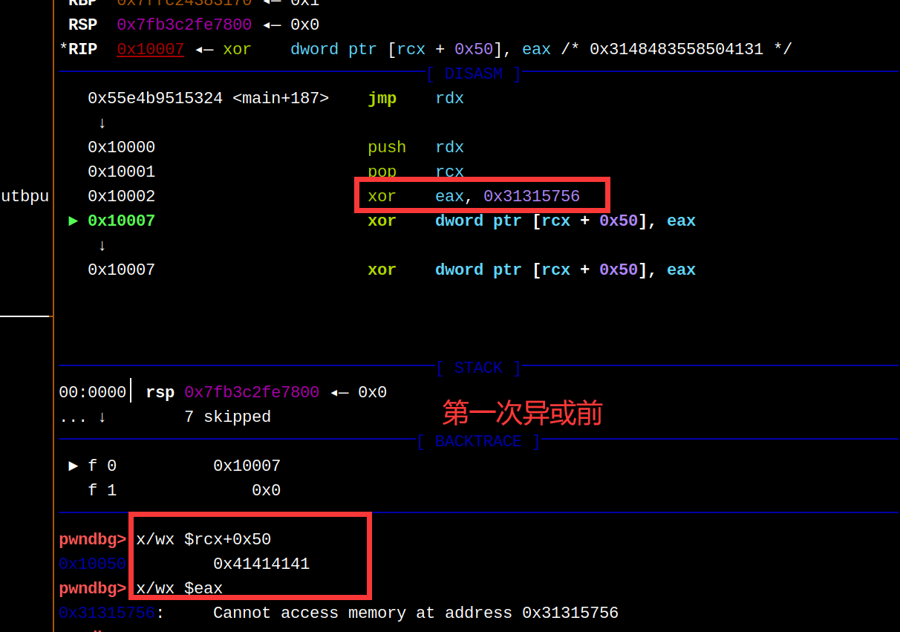
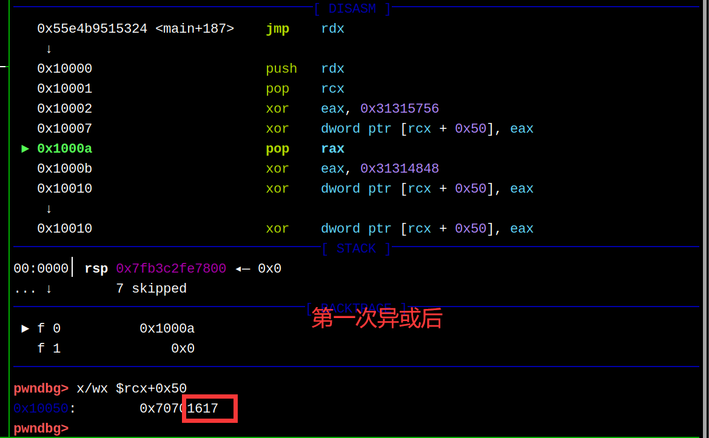
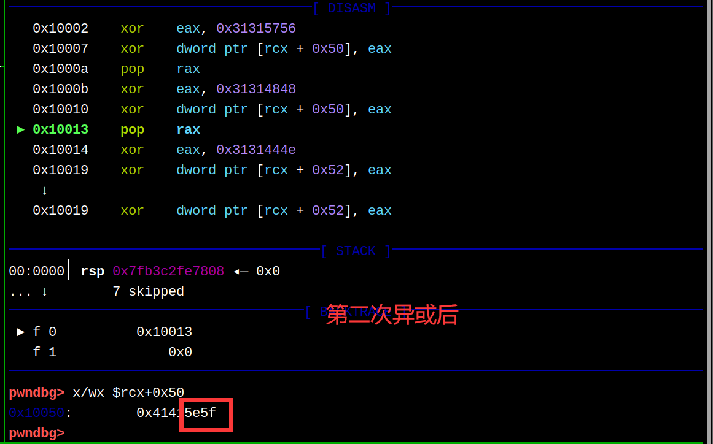

DASCTF X GFCTF 2022十月挑战赛 PWN WP
这次比赛放了三道pwn，做起来还是蛮吃力的，shellcode那题还是经过师傅们提示才做出来的，R()P这题到比赛结束也没有做出来。通过这次比赛感觉自己对于汇编中的gadget理解和利用还是有写不足，在此写下wp记录一下解题的过程。
R()P
保护策略：

漏洞分析：

代码非常的简单，就一个栈溢出漏洞，没有canary，可以随便溢。
最开始有个判断，buf>0x100的话就会进入main函数递归，这里就是一个干扰的点，我们第一次直接发送一个\x00即可绕过这个检查。
利用思路：
尽管代码非常短，但是利用起来有些麻烦。首先这道题就给了read函数，因此后续的利用就需要先篡改read的got表为syscall，然后控制rax为59，执行execve(“/bin/sh\x00”,0,0)
篡改read的got表
想要篡改read的got表，肯定是需要向read got写入数据，因此怎么控制read的rsi成了一个问题，我们需要去观察汇编代码（如下）

我们在第二个read输入后，eax的值会被[rsp+0xc]所赋值，因此如果我们精心构造栈里的数据，那么就可以控制eax，而后我们劫持执行流如果返回到0x40115a处，执行mov rsi,rax的话，就会将rax的值赋给rsi，然后再执行read，如此我们就控制了rsi，实现了read的任意写入，进行read的got表篡改。因为read函数距离syscall非常近(如下)，只差了0x10的偏移，因此我们只需要输入一个字节0x90即可将read的got表改为syscall的地址(我使用的glibc是2.35的)

篡改后的情况如下：

将/bin/sh写入bss段
现在仅仅有了syscall，我们还需要/bin/sh字符串的地址，因此我们需要将该字符串布置到bss段（还是上面的方法，控制rax寄存器，跳转回0x40115a），同时查看ROPgadget发现下面的这个gadget

这个0x404018就是bss段上的地址，因此我们将/bin/sh写到0x404018，再控制好rax(继续控制执行流)，直接去执行这个gadget，即可成功布局好rdi的值。
控制rdx寄存器
上面虽然提到了怎么控制rdi寄存器，但是我们要先布局好rdx的值，才能去布置rdi寄存器，这个顺序不能错。原因如下：

我们控制edx寄存器，必须通过上图的gadget，但是如果执行这个gadget就务必让edi清零了，因此我们只能先让edx变成0，再去布置rdi的值。
这里的思路就是让程序的执行流返回到0x40115d，因为edx是从栈里给的(而我们又能控制栈里的数据，变相的就控制了栈里的数据)，然后将edx置成0，而接下来的read函数执行时，虽然rdx是0也没有关系，顶多就是写不进去数据而已。
控制rdi寄存器
控制rdi寄存器所需要的gadget是mov edi, 0x404018 ; jmp rax,在这之前我们需要将rax改成一个地址，才能保证执行流不会断，所以在刚刚提到的控制rdx寄存器的部分，最后应该让执行流到0x40116d这个地址，去控制rax，然后去跳转到mov edi, 0x404018 ; jmp rax上。
执行完这段gadget我们的rdi和rdx都控制完了，而rsi最后可以控制，因此我们还需要控制下rax，控制rax的gadget就是0x40116d。所以我们先将rax的值设置为0x40116d，这样最后就会jmp过去
控制rax,rsi寄存器
又跳转到了0x40116d的位置，我们先控制rax的值为59，然后去跳转到0x401141地址处，最后控制下rsi的值，开始执行read函数时，因为read的got表已经被篡改为了syscall，我们参数全部布置好了，到此即可获取shell(如下)

EXP：
#coding:utf-8 |

1!5!
保护策略：
程序分析：
这题考察的很明显，就是一个单纯的shellcode编写(只能用给出的机器码) ，如果通过检查的话，就将shellcode执行 题目给出的字符如下：
利用思路：
这道题pop rsi pop rdi syscall等指令都无法使用，我们的思路是去想办法执行一次系统调用read，将数据读到mmap映射出来的区域上，这样第二次用read读的数据就不会受到程序中的check函数限制。
但问题是如何执行系统调用read？
举个例子，syscall的机器码是0x0f05。程序虽然无法写入这个0x0f05，但是却可以写入0x4141和0x4e44。而0x4141和0x4e44异或的结果是0x0f05，这样就做出来了0x0f05。
整体思路是先将映射出来的地址0x10000给到rcx寄存器，然后我们通过如下代码,去将异或后的结果写入内存中 先让eax置空，这样去和一组数据异或的时候，就会直接被赋值为那组数据，然后再去和原本地址里的数据进行异或，进行异或后的结果又被放进了内存中。
xor eax,0x31315756 |
现在就考虑怎么做出来pop rsi和pop rdi以及syscall指令。他们的机器码分别为0x5f 0x5e 0x0f05。
我们需要把这四个字节机器码给分成两批写入，因为0x5f5e需要异或两次做出来，而0x0f05需要异或一次做出来，如果放到一起的话第二次异或，除非我们布置一个0x0000和0x0f05异或，才可以保留0x0f05，否则0x0f05就会被改变。但是我们无法将0x0000输入进去，所以只能两批分开写入。
我们先将0x5f5e写入到内存里。
首先我们要考虑最初在0x10000上面写入0x4848(这个0x4848是啥都行，只要能通过检查，我只是最初随意找了个0x4848)。我们最后想让0x5f5e出现在内存里，那就需要去拿0x4848和0x5e5f(由于小端序)去异或一次，得到0x1617，而0x1617我们肯定是输入不进去的，所以还需要再异或一次得到0x1617。这次我找的是0x4141，因此那0x4141和0x1617异或，得到的结果是0x5756，然后发现0x5756可以输入进去。
因此思路为：先将0x4141写到内存，然后拿0x5756和这段内存异或，此时的内存值为0x1617。我们再拿0x4848和这段内存异或就得到了0x5e5f。
  然后如法炮制构造出来syscall指令。
因为构造pop rdi和pop rsi指令，就意味着在这之前我们需要压栈参数。观察此时的寄存器状态，我们需要给rsi 0x10000，需要给rdi 0。正好rbx和rcx寄存器满足这个条件，而且我们还能用push rbx push rcx。所以我们在0x10050-0x2的位置写下push rbx和push rcx的机器码。

最后执行系统调用read，把获取shell的shellcode给重新读入一次即可。
EXP
from tools import * |
Magic_Book
house of botcake
这道题利用的是house of botcake。第一次遇到这个手法，先简单记录一下该手法是如何利用的。
在2.29以后的glibc版本中加入了key机制，进入tcache bin的堆块会被添加一个key字段(也就是tcache_perthread_struct的地址)，位于chunk的bk位置。如果之后释放堆块准备进入tcache bin的时候，发现堆块的key字段位置已经是tcache_perthread_struct的地址，那就去遍历当前tcache bin，如果发现已经存在了当前堆块，那么就会报出 free(): double free detected in tcache 2的错误。
而house of botcake的思路是，先将堆块放入unsorted bin中(此处要利用UAF漏洞)，这样避免了key的位置是tcache_perthread_struct的地址。然后我们再次释放该堆块让其进入tcache bin，这样就绕过了检查。完成了double free，让同一个堆块即出现在了unsorted bin中又出现在了tcache bin中。
举个例子:
我们先申请七个堆块，准备一会将其释放，去填满tcache bin(如下)
void *p[20]; |
然后再申请两个0x100的堆块以及一个防止和top chunk合并的堆块(如下)
void *prev=malloc(0x100); |
接着将最初的七个堆块全部释放，填满tcache bin(如下)
for(i=0;i<7;i++) |
接着我们先去释放位于高地址的victim，它将进入unsorted bin，然后释放位于低地址的prev，它也会进入unsorted bin，而且将与victim合并成一个更大的位于unsorted bin的一个堆块(如下)
free(victim); |
最后我们再申请出来一个0x100的堆块(因为tcache bin具有绝对的优先权，所以这个堆块会从tcache bin里取出来，而此时的tcache bin就只有6个堆块，空出来了一个)，然后我们将victim再释放掉，此时的victim进入tcache bin。这样我们只要从unsorted bin申请出来任意一个大小的堆块(能覆写到victim的fd指针并且大小不为0x100)，就可以打一个tcache poisoning。(如下)
malloc(0x100); |
保护策略：

程序逻辑：
程序没有edit函数和show函数，然后有只能用一次的UAF漏洞。对申请的字节数还有限制，最大为0x100。
利用思路：
这题如果单纯的打house of botcake，那么后续只能打io leak泄露一个堆地址。如果想第二次打tcache poisoning的话，就必须要进行一点布局。
我们先看一下单纯的io leak用house of botcake是怎么布局的。
def pwn(): |
上面就是最简单的一个house of botcake的布局，但是需要注意的是在add(0x100,'here')这行执行的时候，情况如下:

可以看到，我们将要申请的tcache bin的堆块为0x110，而申请出来的时候，是可以控制unsorted bin的size，如果我们将unsorted bin的size改成一个更大的size(让unsorted bin里包含一个tcache bin中的堆块)，这样下次切割unsorted bin的时候，又能够控制里面被包含的那个tcache bin的堆块的fd指针，从而达到第二次的tcache poisoning。
不过由于2.31的glibc版本中，对unsorted bin的检查较为严格，我们还需要伪造一个size和prev_size来保证unsorted bin在篡改size后依然能通过检查。
最后需要注意的就是，在第一次tcache poisoning攻击后0x110的链已经无法进行第二次的tcache poisoning了，所以我们需要提前布置一条新的链，便于第二次的tcache poisoning。
EXP:
from tools import * |

最开始复现这题的时候，挺懵的。通过不断调试roderick师傅的exp，渐渐知道了这题的做法(其实是我太菜了，花了一天才弄懂)。不过最后也仅仅是知道了这题的做法和思路，但不明白这个布局是怎么做出来的，于是第二天早上把exp删了，自己重新写了一下这道题，按照自己的思考走了一遍，才彻底明白了为什么要这么布局。
其实这也说明了在堆的布局上，不能只知其然，更要知其所以然。
参考文章：
DASCTF X GFCTF 2022十月挑战赛 pwn wp - LynneHuan - 博客园 (cnblogs.com)